ごあいさつとか紹介とか
ごあいさつ
フリーペーパー
「ごう」とは？
課外プロジェクト
について
おすすめしもごう
おすすめしもごう
しもごうイイトコ名所巡り
風穴洞
観音沼
へいほう石
ふじの花
小沼崎トンネル
宝箱１
宝箱２
宝箱３
塔のへつり
湯野上温泉
しもごう☆ゲーム
下郷甚句
さいのかみ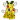
ふたまたやま
桜木姫
猿楽台地ソバ畑
戸赤の山桜
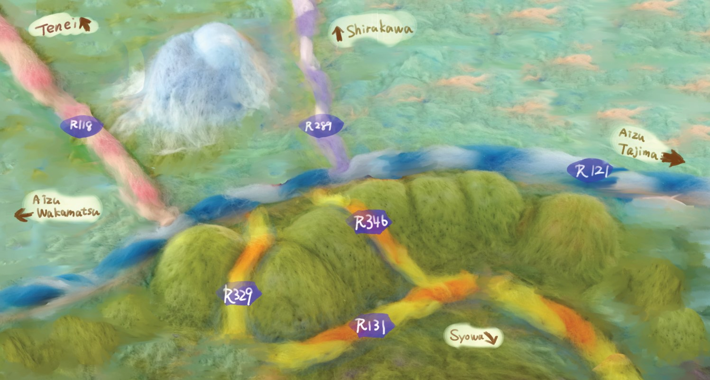
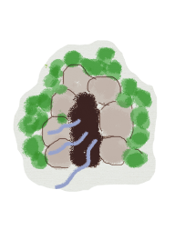
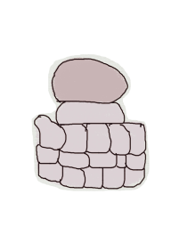
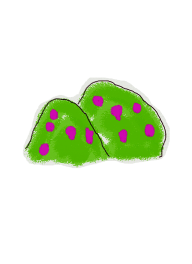
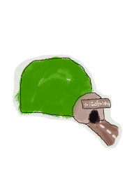
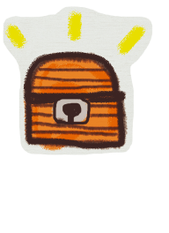
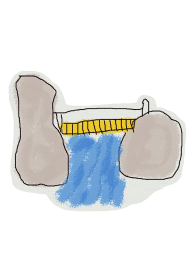
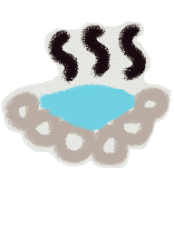
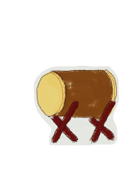
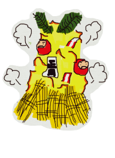
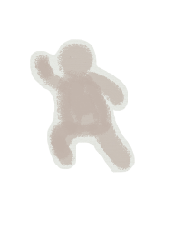
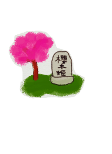
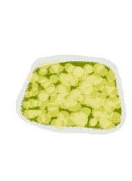
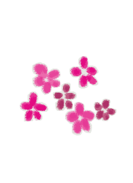
地図はスクロールします。動かしてね！
音源: 魔王魂
(効果音は調整のため一時停止中です)
イラスト:いらすとや
写真：
フリー写真素材ぱくたそ
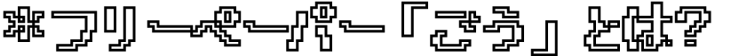
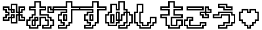
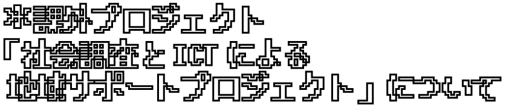
更新履歴
2021.1.8 2020年度版(2020.ver1)公開
⇒2020年度版は
こちら
2021.7.20 2020.ver2 公開


 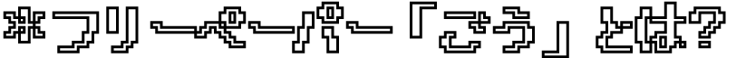
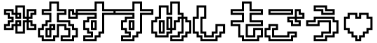
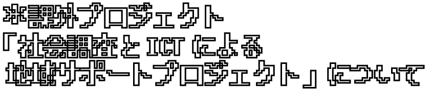
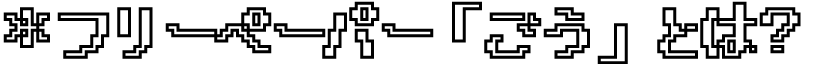
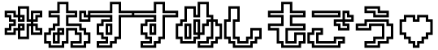
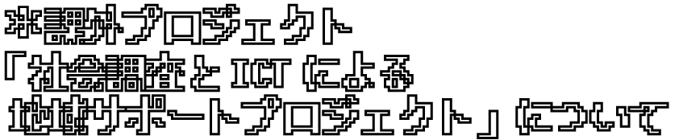